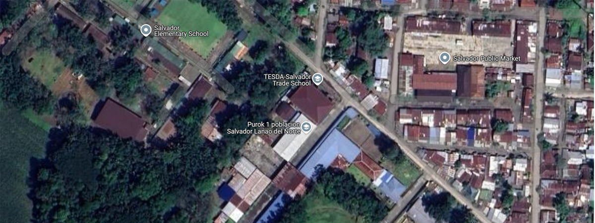

.png)
Salvador Trade School History
Nineteen Hundred and Sixty Five (1965), during one of the routinary visit of the late Congressman Laurentino Badelles, Ex-mayor Antonio Abadiano an Agricultural Graduate from Central Luzon Agricultural College requested the said congressman to established an Agricultural School in Salvador, Lanao del Norte so that sons and daughters of poor farmers can be given a secondary education with less expenses, technically trained, cheap but profitable.
Because of the abundance of water supply in Inasagan and Cabongbongan springs, now Camp Allere the populace was unanimously recommending said place for the school site. Before congressman Badelles left for Iligan city, he instructed mayor Abadiano to secure the approval of the proposed school site while he will continue with the Draft of his Bill.
Though the purpose was good and noble, the people were reluctant to part with their land, even if it will be paid by the government. They have strived hard and overcome all difficulties so that their love ones can claim a land at their very own.
Be that as it may, the draft of the bill was post through minus the school site. Congressman Badelles was only too eager and interested to amend the bill as only eight hectares will be required.
On January 1965, Congressman Badelles sponsored House Bill No. 8376 which easily passed the 3rd reading in both houses of the congress and the senate. Though house bill no. 8376 was approved with enabling Act 04440 on June 19, 1965 its implementation was delayed. Politicians come and go and mayor Abadiano was relieved by ex-mayor Apolonio Yap who wanted to open the Trade School. But Father Reilly with a private school requested that if a government school be opened he be allowed to graduate his first fourth year students as he has spent plenty of money for the construction of said school. Mayor Yap was again relieved by Mayor Pangantapan Tawantawan. Situation then in Salvador had greatly changed. Prices of commodities had gone up that even the matriculation and tuition fees were raised. Then how can the sons and daughters of the poor farmers around pursue a secondary education?
Civic minded citizens of Salvador grouped together for a meeting with the issue of establishing a government secondary school in the municipality and all agreed that the Municipal Council petition Congressman Dimaporo to set aside funds for the opening of a Trade School.
The Salvador Trade School, Salvador, Lanao del Norte was formally opened on July 6, 1971. The school was pioneered by four teachers and seven support staff with an enrolment of 72 students housed temporarily in the Salvador Central Social Hall under the administration of the late superintendent Sangki Singayao and under the direct supervision of the principal Pawadji H. Hadja. The school has its annual appropriation of P 50,000.00.
On August 9, 1971 misunderstanding between Christian and Muslim occurred and people in the municipality evacuated to other provinces including students of the school. On August 24, 1971 with the discretion of the late superintendent Sangki Sangayao and granted by the director of the Bureau of Vocational Education to evacuate the teachers and support staff at Maigo School of Arts and Trades, Maigo, Lanao del Norte for safety reasons and to undergo training in their respective duties under the supervision of Mr. Maximo Aguaviva, Jr. principal of the said school.
The supply officer and other personnel of the school with the carpenters who were left behind in Salvador did not lost time in constructing the first building with the aid of the military personnel. On October 4, 1971, teachers were recalled at Maranding Elementary School, Maranding, Lala, Lanao del Norte to continue their classes with 24 students the remaining among the remnants of the evacuees.
On January 1972 classes were returned to Salvador Trade School with the employees to occupy the new building. The enrolment was only 75 students with an increased only of 3 students as of the beginning. The annual appropriation was P 103,035.00. In the year 1973-74 the enrolment was increased to 195 students with an annual appropriation of P 135,265.00. Two building were already constructed. In 1974-1975 the enrollment was again increased to 225 students with an annual appropriation of P231,567.00. The 2-storey Related Subject Building was constructed unfinished.
In 1975-76 the enrollment was again increased to 275 students with annual appropriation of P 274,00.00. One Boys Shop Building of 2-unit prefab building was constructed unfinished with a principal cottage unfinished. In 1976-1977 a Girls Trade Building with another 2-unit pre-fab building was constructed unfinished with an annual appropriation one half of the previous years appropriation.
In 1996-1997 the Salvador Trade School is operating under the National Budget of P 3,856,124.00 for Personal Services and P 378,504 for Maintenance and other Operating Expenses per annum categorized as Technical-Vocational School. It’s funding control and operation is administratively supervised by the Technical Education and Skills Development Authority (TESDA) Region XII, Cotabato City.
It offers ten (10) programs as Post-Secondary, Technical Vocational Education Program which is administered by the Technical Education and Skills Development Authority (TESDA) and the modified Secondary Education Development Program (SEDP) which is supervised by the Department of Education, Culture and Sports (DECS).
There were 39 positions with regular appointment of which 16 are administrative supervisory and support staffs, 23 are teachers of which 12 of them were utilized to handle the Technical Vocational Education Program. For the school year 1997-1998 30 % of the total enrollment is Post-Secondary first year and second year respectively.
Because of the TESDA Law to separate the secondary education and approved by the GAA to fully transfer its secondary enrollees including teaching staff and some personnel who would not qualify to the Technical Education and Skills Development Authority. On October 23, 2001 a Memorandum of Agreement (MOA) was signed between the Technical Education and Skills Development Authority (TESDA) represented by its Regional Director and the Department of Education represented by the Regional Director of the same Region XII. The agreement was to divide the school equally with the 8 hectares of land area.
The total personnel at present that was retained after the rationalization of TESDA administered school, has 12 Teaching staff and 10 Administrative, Supervisory and support staff. Budget for Personal Services and MOOE for the personnel who were transferred to DEP-ED was fully transferred to them. School buildings and other facilities which belong to the designated land area of the DEP-ED or TESDA are now maintained by the agency concerned.
With TESDA a lot of changes have been made. The increased in our MOOE from 378,504.00 annually to 3 million, we have purchased facilities, tools and equipments needed for the training. We have also refurbished some of our dilapidated shops and laboratory and also we are recipient of the TESDP-ADB Project with Tools and Equipment package. All regular programs have been registered to UTPRAS and we are awarded Bronze Award under the PTQA.